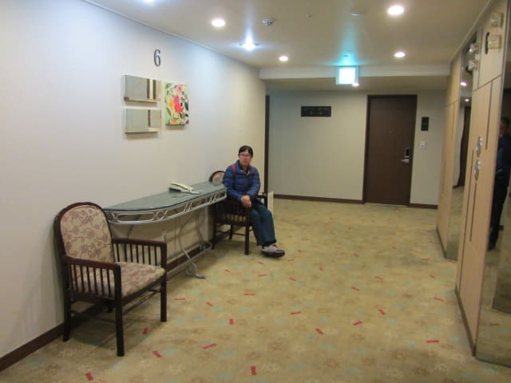

在濟州市「제일교 동문시장입구」巴士站下了車, 沿馬路一直往下走, 經過濟州東門市場、濟州東門水產市場、濟州市中央地下商店街和濟州市七星路購物街等等的購物區, 約半小時才抵達濟州島羅波羅酒店。我們會在濟州島羅波羅酒店住宿兩天, 後天便會離開濟州島, 乘渡輪往韓國本島南部的木浦市 (Mokpo), 展開這旅程的第二部分行程。
因乘渡輪往木浦是最重要的行程, 如果錯過了, 第二部分的計劃便會延誤, 部份行程更需要取消。為確保第二部分的行程可以順利進行, 我們稍後便往濟州港旅客碼頭 (제주항 연안여객터미널 Jeju Coastal Ferry Terminal)預先購買後天 13:40 往木浦的船票。根據剛才從「제일교 동문시장입구」巴士站走來酒店的距離, 估計步行約四十五分鐘便可抵達濟州港旅客碼頭, 只希望一切順利。
在房間稍微休息一會, 吃了剛剛買的草莓, 十分鮮甜。接著便開始濟州市的行程 – 步行往濟州港旅客碼頭。
走出房間, 乘電梯往一樓大堂。雖然是6F, 但房間卻是16F的, 有些古怪。

走出酒店。門前的雕像十分得意有趣。
濟州牧官衙 (제주목관아)就在濟州島羅波羅酒店的馬路對面。

濟州市中央地下商店街
在酒店出口轉左走一會便是濟州市中央地下商店街12號出入口。沿樓梯走下, 穿過長長的濟州市中央地下商店街。因為現在要趕往濟州港旅客碼頭, 沒有停下來仔細看。
山地川廣場 (산지천마당)
在濟州市中央地下商店街盡頭處的1號出入口走上街道, 迎面是一個很大的廣場 – 山地川廣場, 很多老人家都坐在這裡休憩。
山地川 (산지천)
穿過廣場, 便來到一條小河畔, 環境相當優美。小河的名稱是山地川。
接著沿山地川畔走。雖然要趕往濟州港旅客碼頭, 也間中停下來拍照。
感覺有些像首爾的清溪川。
山地川中有一隻鷺, 我們每次經過這裡都看到牠, 都是呆若木雞的站著, 起初以為牠是呆呆滯滯的, 直至我們在明天看到……, 才知道牠是目光炯炯、耳聽八方的站著。
一直沿河畔走。
天色愈來愈昏暗, 很多店舖都開始亮起燈來。
在山地川濟州港出口處轉左走, 經過一個好像是民族村的地方, 入口三根木柱是橫放了的, 表示已經過了營業時間。
濟州港旅客碼頭 (제주항 연안여객터미널 Jeju Coastal Ferry Terminal)
接著是一段破爛不堪和沙塵滾滾的行人道, 看來還在興建發展中。走了一會, 看到前面不遠處的馬路對面有一座建築物, 估計那裡便是濟州港旅客碼頭了。馬路沒有斑馬線, 汽車左右高速飛馳, 很驚險地走過馬路。再繼續向前走一會便來到濟州港旅客碼頭。
來到頭濟州港旅客碼的正門入口。OH! 大門已經關上, 大堂內燈光暗淡, 半隻人影也沒有, 心裡已感覺不妙!
拐過建築物, 側門沒有關上, 從這裡可以進入一樓大堂。匆匆走到購票處, 一片昏暗, 很明顯已經過了營業時間。看看手錶, 其實只是下午六時四十五分。唉! 花了差不多一小時走到來這, 結果白走一趟! 沒辦法, 唯有明天再來吧!

{kind=link}